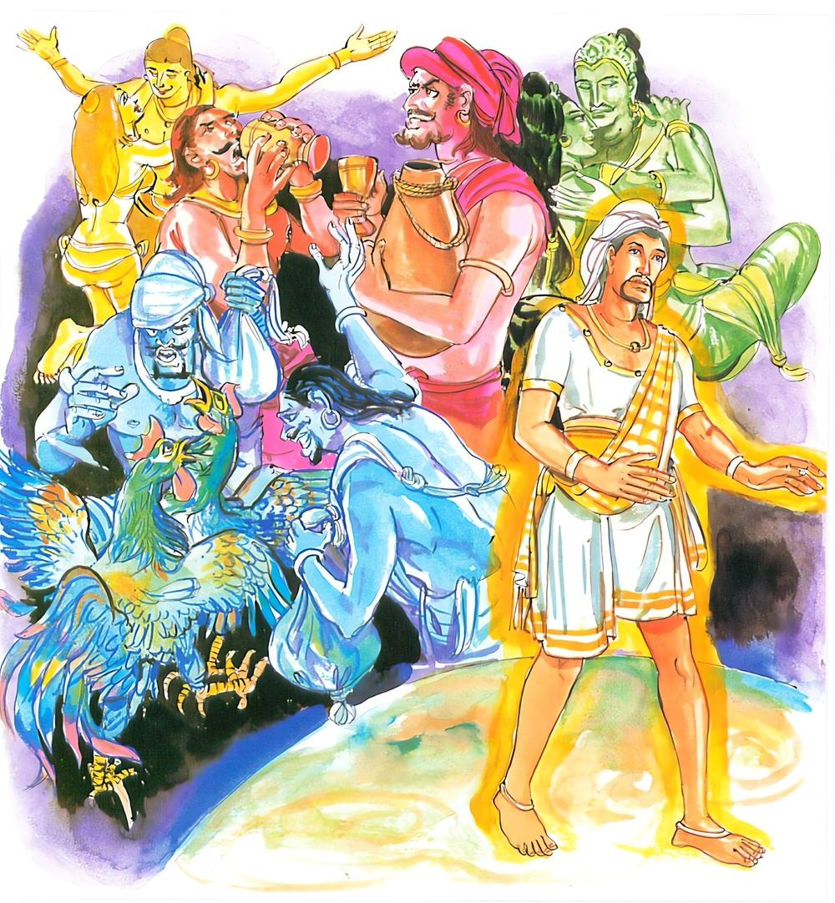

5-2 දෙවන මහාකාශ්යප තෙරුන්ගේ සද්ධිවිහාරික භික්ෂුවගේ වස්තුවයි.
මෙම කතාව සද්ධර්ම සාගරයෙන් ද කියවන්න.
චරඤ්චෙ නාධිගච්ඡෙය්ය සෙය්යං සදිසමත්තනො
එකචරියං දළ්හං කයිරා නත්ථි බාලෙ සහායතා.
ශිලසමාධිප්රඥායෙන් තමාට වඩා උතුමකු හෝ තමා හා සම වූවකු හෝ සොයන තැනැත්තේ, එබන්දකු නො ලබන්නේ නම්, හුදෙකලා වැ විසීම දැඩි කරන්නේ ය. අනුවණයා කෙරෙහි යහලු බවෙක් නැත.

චරං චෙ නාධිගච්ඡෙය්ය යන මේ ධර්මදේශනාව ශාස්තෘන්වහන්සේ සැවැත්නුවර වාසය කරන කාලයෙහි මහාකාශ්යප තෙරණුවන්ගේ සද්ධිවිහාරික භික්ෂුවක් අරභයා දේශනා කළසේක. දේශනාව රජගහනුවර උපන්නකි. රජගහනුවර අසළ පිප්ඵලිගුහාවෙහි වාසයකළ මහාකාශ්යප තෙරණුවන්ට සද්ධිවිහාරිකයෝ දෙදෙනෙක් උපස්ථාන කළහ. ඔවුනතර එක් උපස්ථායකයෙක් ඉතා හොඳින් වතාවත් කෙළේය. අනිත් උපස්ථායකයා පළමුවැන්නා කළකළ දේ තමන් විසින් කරන ලද හැටියට පෙන්වමින් මුවදෝනා පැන් දැහැටි පිළියෙල වී ඇතිබව දැන ගොස්, ස්වාමීනි, මුවදොනා පැන් දැහැටි සූදානම්ය. මූණ සෝදාගනු මැනවයි කියයි. පාදොවන නාන ආදි කාලවලදීද මෙසේම කියයි. අනිත් තැනැත්තා මෙසේ සිතීය:
මොහු නිතරම මා විසින් කළ කළ දේ තමන් කළබවක් දක්වයි. එහෙම වුණාවේ, මොහුට කළයුත්ත කරන්නෙමියි ඔහු ආහාරගෙන නිදාසිටින වේලාවේ නානජලය උණුකොට වෙනත් සැළියකට වත්කොට එය සඟවා තැබීය. වෙනදා ජලය උණු කරන සැළියට වතුරටිකක් දමා ලිප මත තබා පැත්තකටවී සිටියේය.
අනික් උපස්ථායකයා සවස නැගිට උදුනෙහි දුම්දමන සැළිය දැක වතුර උණුකර කොටුවෙහි තබා ඇතැයි සිතා වහා ගොස් තෙරුන් වැඳ ස්වාමීනි, දියනානා කොටුවෙහි ජලය උණුකොට තබාඇත. නහනු මැනවයි කියා තෙරුණුත් සමගම කොටුවට පිවිසියේය. තෙරණුවෝ එහි ජලය නොදැක ඇවැත්නි ජලය කොහිදැයි ඇසූහ. ඔහු ගිනිශාලාවට ගොස් භාජනයට හැන්දක් දමා සැළිය හිස්බව දැන බලන්න මේ දුෂ්ටයාගේ වැඩ. හිස් බඳුන උදුනේ තබා කොහේ ගියේද? මම කොටුවෙහි ජලය ඇතැයි සිතා දැන්වූවෙමියි දොස් නගමින් කළ රැගෙන තොටට ගියේය.
අනිත් උපස්ථායකයා පිටිපස්සෙහි තැබූ ජලය ගෙනවුත් කොටුවෙහි බහාලීය. තෙරණුවෝ මෙසේ සිතූහ. මේ බාලයා මා විසින් ජලය උණුකර තබන ලදි. ස්වාමීනි නහනු මැනවයි කියා දැන් දොස්බස් පවසමින් කළයත් රැගෙන තොටට යයි. මේ කිමෙක්දැයි සොයා බලමින්, මෙතෙක් කල් මේ බාලයා මොහු විසින් කරන ලද වතාවත් තමන් කළාක් මෙන් කීවේයයි දැන සවස ළඟට පැමිණි ඔහුට අවවාද කරමින් ඇවැත්නි, භික්ෂුව විසින් තමන් කළ දෙයක්ම තමන් විසින් කරන ලදැයි කිය යුතුය. නොකළ දෙයක් නොකිය යුතුය. ඔබ මේ දැන් කොටුවෙහි ජලය තබා ඇත. ස්වාමීනි, නහනු මැනවැයි කියා මා ආ පසු කළයත් රැගෙන දොස්බස් කියමින් තොටුපළට යන්නෙහිය. පැවිද්දන් මෙසේ කිරීම අයෝග්යය.
හෙතෙම, බලන්න, මේ තෙරණුවන්ගේ හැටි. වතුර ටිකක් නිසා මට මෙසේ දොස් පවරතියි කිපී දෙවෙනි දා තෙරණුවන් සමඟ පිඬුපිණිස නොගියේය. මහාකාශ්යප තෙරණුවෝ අනිත් භික්ෂුවත් සමඟ එක පෙදෙසකට වැඩියහ. අර භික්ෂුව තෙරණුවන් වහන්සේ ගියකල්හි උන්වහන්සේගේ දායක ගෙදරකට ගොස් එහි හුන් අය තෙරුන්වහන්සේ කොහිදැයි ඇසූ පසු උන්වහන්සේට අපහසුකම් නිසා විහාරයෙහිම වැඩ සිටිතියි කීවේය. ස්වාමීනි යමක් අවශ්යදැයි ගෙදර අය ඇසූහ. මෙබඳු ආහාරයක් ලදහොත් මැනවයි කීවේය. ගෙදර අය ඔහු කී අයුරින්ම ආහාර සූදානම්කොට දුන්හ. ඔහු අතරමගදීම ඒ ආහාරය අනුභව කොට විහාරයට ගියේය.
තෙරණුවෝ තමන් ගිය තැනින් වටිනා සිනිඳු වස්ත්රයක් ලැබී තමන් සමග ගිය දහර භික්ෂුවට එය දුන්හ. හෙතෙම එය පඩුපොවා තමන්ගේ ඇඳීම් පෙරවීම් සඳහා යොදා ගත්තේය. දෙවෙනි දිනයේ ඒ දායක ගෙදර අය තෙරණුවන් වෙත ගොස් ස්වාමීනි, ඔබවහන්සේට අපහසු බව දැන අපි ළාබාලතෙරුන් කීහැටියට ආහාර පිළියෙලකොට එව්වෙමු. එය වළඳා පහසු වූයෙහිදැයි විමසූ කල්හි නිහඬ වූහ. විහාරයට ගොස් ඒ තරුණ භික්ෂුව තමන් ළඟටවුත් වැඳ සිටි කල්හි ඇවැත්නි තොප ඊයේ මෙබන්දක් කර ඇත. එය පැවිද්දෙකුට අනුචිතය කාට හා් කියා සාදාගත් දෙයක් අනුභව කිරීම පැවිද්දෙකුට නොවටීයයි කීහ. හෙතෙම කිපී තෙරුන් හා වෛර බැඳ පළමු දිනයේ වතුර ටිකක් නිසා මා බොරුකාරයකු කොට අද තමන්ගේ දායක ගෙදරින් බත්මිටක් කෑම නිමිතිකරගෙන කියා පිසවාගත් ආහාර කෑම අයෝග්යයයි කියයි. ලැබුණුවස්ත්රයත් තමන්ගේ උපස්ථායක භික්ෂුවට දුන්නේය. මේ තෙරුන්ගේ ක්රියා ඉතා නපුරුය. මොහුට කළයුත්ත දනිමියි දෙවෙනි දිනයේ තෙරුන් ගමට ගිය කල්හි තෙමේ විහාරයෙහි නැවතී දණ්ඩක් ගෙන ප්රයෝජනයට ගන්නා භාජන බිඳදමා තෙරුන්ගේ පන්සල ගිනිතබා නොදැවෙන බඩු, මුගුරු පහරින් කුඩුකර දමා පලාගියේය. හෙතෙම මරණින් පසු අවීචිමහානිරයේ උපන්නේය.
ඉන්පසු මහාජනයා, මහාකාශ්යප තෙරණුවන්ගේ සද්ධිවිහාරික භික්ෂුව අවවාදමාත්රයක් ඉවසාගත නොහැකිව කිපී පන්සල පුළුස්සා දමා පලාගියේයයි කථාවක් ඉපදවූහ. ඉන්පසු එක් භික්ෂුවක් සවස රජගහනුවරින් පිටත්ව බුදුන් දකිනු කැමැත්තෙන් දෙව්රමට ගොස් බුදුන් වැඳ බුදුරජාණන්වහන්සේ, පිළිසඳර කථාකොට කොහි සිට ආවෙහිදැයි ඇසූකල්හි ස්වාමීනි, රජගහනුවර සිටයයි කීවේය. මාගේ පුත්ර මහාකාශ්යප තෙරුන් සුවසේදැයි ඇසූ විට එසේය සුවසේය ස්වාමීනියි කීවේය. උන්වහන්සේගේ එක් සද්ධිවිහාරිකයෙක් අවවාද මාත්රයකට කිපී පන්සල ගිනිතියා පලාගියේයයිද දන්වා සිටියේය. ඔහු දැන් පමණක් අවවාද නිසා කිපුණෙක් නොවෙයි. පෙරත් එසේමය. කුටි විනාශ කෙළේත් දැන් පමණක් නොවෙයි. පෙරත් ඔහු කුටි දූෂණය කෙළේයයි අතීත කථාවක් ගෙන හැරපා වදාළ සේක:
අතීතයෙහි බරණැස බ්රහ්මදත්ත රජු රාජ්යය කරන කාලයෙහි හිමවත්පෙදෙසෙහි එක් සිංගිල පක්ෂියෙක් (අඟක් වැනි හොටක් ඇති) කැදැල්ලක් සාදා එහි වාසයකෙළේය. දිනක් වැසි වසිනවිට එක් වඳුරෙක් සීතලෙන් වෙවුලමින් ඒ ප්රදේශයට පැමිණියේය. සිංගිල ඔහු දැක ගාථාවක් කීවේය.
මිනිසෙකුට වැනි හිසක් අත් පාද ඔබට ඇත
ඉතින් වානරය ඇයි ගෙයක් නොම හදන්නේ
වඳුරා, මට අත්පා ඇතත් කල්පනා කර බලා ගෙයක් හදාගන්නා නුවණ නැතැයි සිතා එය ප්රකාශකරන පිණිස මේ ගාථාව කීවේය:
මිනිසෙකුට වැනි හිසක් අත් පාද ඇති නමුත්
සිංගිලය ඔහුට මෙන් හොඳ නුවණ මට නැතිය
ඉතින් ඔබේ මේ කථාව අනුව ඔබේ ගෘහවාසය කෙසේනම් සම්පූර්ණ වන්නේදැයි ගරහමින් සිංගිල මේ ගාථා කීවේය:
සසල සිතිවිලි ඇති කෙටි දුරක් පමණ දකිනා
තිරගති නැති අයට කිසිවිටක සැපතක් නැත
අතේ සවි ඇති තොප මැලිකමට හුරුවී ඇත
රැකෙනු පිණිස සීතලෙන් වඳුර කුටියක් කර ගනු
වඳුරා මේ සිංගිලයා මා සැලෙනසිත් ඇති, පටු කල්පනා ඇති, මිත්රද්රෝහී අස්ථිරගති ඇත්තෙකු කරයි. දැන් මොහුට මගේ මිත්රද්රෝහී බව පෙන්වමියි කුරුළුකූඩුව කඩා විසුරුවැ දැම්මේය. පක්ෂියා ඔහු කූඩුවට අත තබනවිටම එක් පැත්තකින් නික්මී ඉගිළීගියේය.
ශාස්තෘන්වහන්සේ මේ ධර්මදේශනාව ගෙනහැර දක්වා ජාතකකථාව අවසාන කළසේක. එදා වඳුරා නම් මේ කුටි දූෂක භික්ෂුවයි. සිංගිල පක්ෂියා නම් මහා කාශ්යප තෙරනුවෝයයි ජාතකය සසඳා, මහණෙනි, මොහු අද පමණක් නොව පෙරත් අවවාදයට කිපී ගෙවල් කඩාදමා විනාශ කෙළේය. මා පුත් කාශ්යපට මෙබඳු බාලයෙක් සමග වාසය කිරීමට වඩා හුදෙකලා වාසයම ශ්රේෂ්ඨයයි වදාරා මේ ගාථාවද ප්රකාශ කළහ:
ගුණෙන් තමනට වැඩි නැතහොත් සම ගුණම ඇති
අය ඇසුරට ගතයුතුය නැතොත් තනියම විසුම යහපති
එහි චරං යන චතුර්විධ ඉරියව්වල පැවැත්ම නොගෙන මානසික හැසිරීම ගතයුතුයි. කල්යාණ මිත්රයෙකු සොයාබැලීම යන අර්ථය ගතයුතුය. සෙය්යං සදිසමත්තනො යනු තමන්ගේ සීල සමාධි ප්රඥා ගුණවලට වඩා වැඩිප්රමාණයක් හෝ සමානප්රමාණයක් ඇත්තෙකු හෝ නොලැබෙන්නේ නම් යන අර්ථයි. එකචරියං යනු ඉහත කී අයගෙන් තමන්ට වඩා ගුණ ඇත්තෙකු ලැබුණුවිට සීලාදි ගුණයෙන් තමන් වර්ධනය වෙයි. සමාන ගුණ ඇත්තෙකු ඇසුරු කරන විට තමන් ගුණයෙන් නොපිරිහෙයි. තමන්ට වඩා පහත් හීනයකු සමග විසීමෙන්, එකට යම්යම් වස්තු පරිභෝගකිරීමෙන් සීලාදියෙන් පිරිහෙයි. එහෙයින්,
මෙබඳු පුද්ගලයන්, අනුකම්පාවෙන් මිස, දයාවෙන් මිස, සේවනය භජනය පයිරුපාසනය නොකළ යුතුයයි කියා තිබේ. එබඳු පුද්ගලයකුගෙන් කිසිවක් බලාපොරොත්තුත නොවී, මොහු මා නිසා සීලාදි ගුණයෙන් වැඩෙන්නට පුළුවන යන අදහසින් ඔහුට සංග්රහයක් කළහැකිය යන අදහසින් ඇසුරුකිරීමේ වරදක් නැත. වෙනත් අදහසකින් නම් නොවේ. එකචරියං දළ්හංකයිරා යනු චුල්ලසීල, මජ්ඣිමසීල, මහාසීල, දශකථාවස්තු තෙලෙස් ධුතාංගගුණ, විදර්ශනාගුණ, සතරමග, සතරඵල, ත්රිවිද්යා, ෂට්අභිඥා යන මේ සහායක ධර්මයෝය. මෙබඳුගුණ බාලයන් ඇසුරෙන් නොලැබේ.
දේශනාවසානයෙහි ආගන්තුක භික්ෂුව සෝවාන්ඵලයට පැමිණියේය. අනිත් බොහෝ දෙනාත් සෝවාන් ආදි ඵලවලට පැමිණියාහුය. දේශනාව මහාජනයාට සාර්ථකවිය.